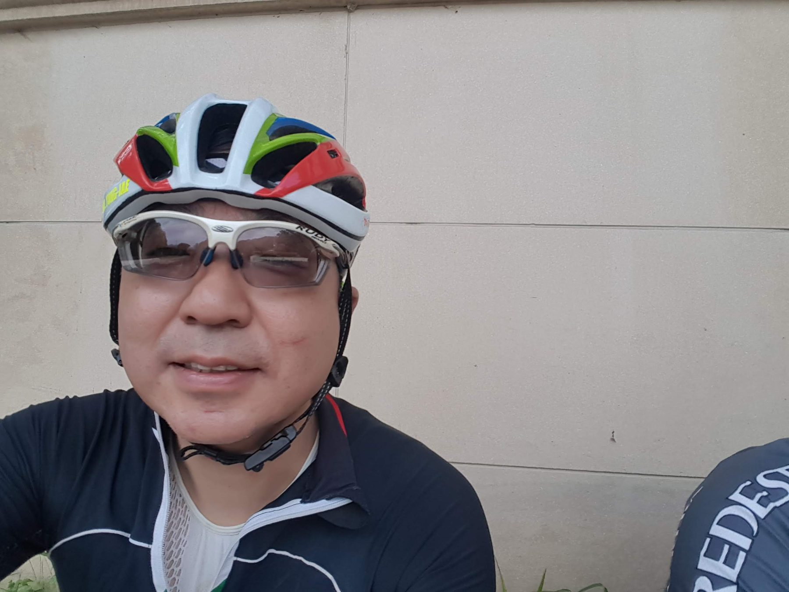
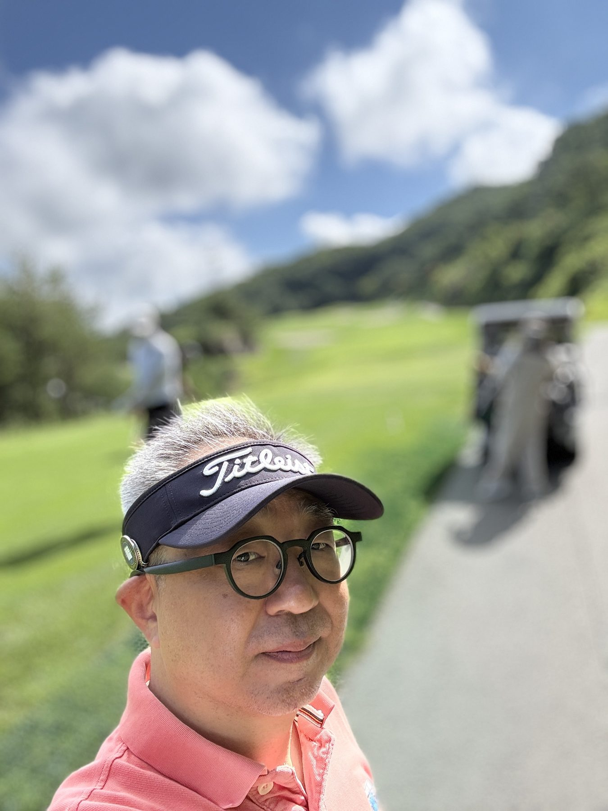
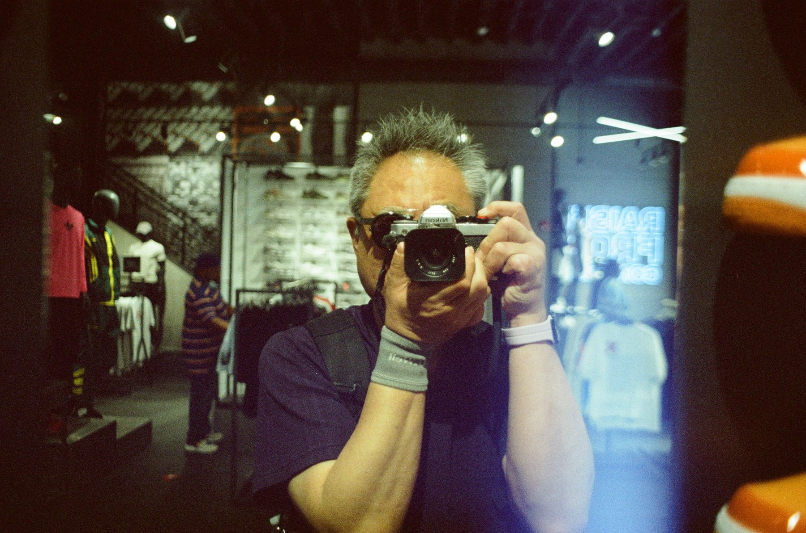
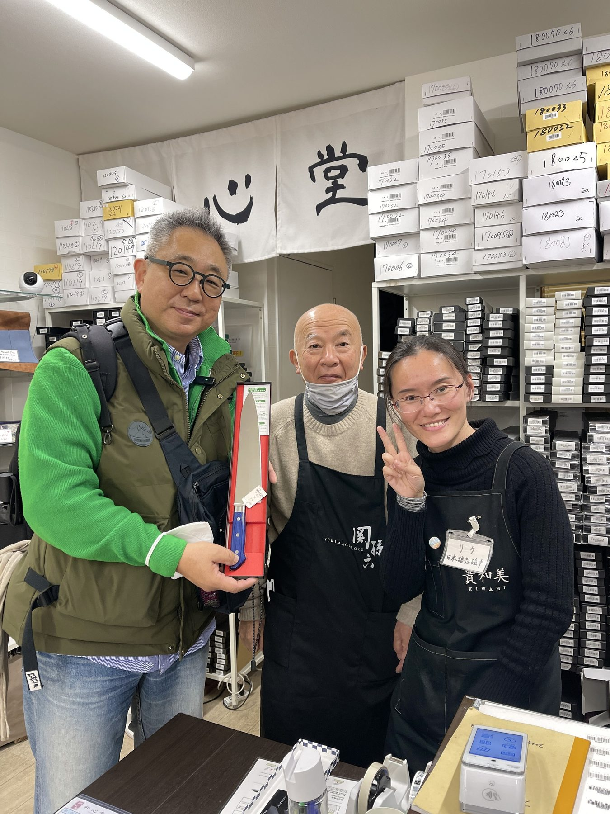

Thirty-one years, and the knife came second.

I spent the first thirteen years of my working life inside systems. From 1995 I was in the procurement department of a listed construction company — steel, ready-mixed concrete, plate, subcontractor bids — and then on the company-wide BPR team that took every department's process apart, redesigned it and put it on a computer. From 2003 to 2007 I sold financial products, which teaches you to sit in front of a stranger and explain something difficult in plain words.
In October 2007 I walked into a meat market to learn a trade with my hands. Eighteen months on pork carcasses, a year on beef. Then factories and plants, then dining rooms: a premium Hanwoo house, an omakase counter, a slaughterhouse on Ulleungdo, a charcuterie programme, and now a food-tech startup where I am the product director.
I am not a chef who picked up business, or a businessman who likes food. I am a butcher who spent a decade inside corporate systems first, and that combination is the work: a craft that can be taught, costed, written down and repeated.
A career, in order
Every date here is the actual month I started and stopped. Where I have left a gap, it was not a straight road.
Education: Myongji University, Trade (1989–1994). Foreign engagements, in addition to the trips photographed in the archive: official Hanwoo instructor for the Korea Beef Association in Hong Kong, Singapore and Laos, and K-BBQ kitchen consulting in Boston, 2026.
Interests & travel
What fills the days when I am not standing at a block: road, course, film and family.




Coffee is drip, and the two bags I keep coming back to are Kenya AA and Ethiopia washed — I will argue about water temperature before I will argue about anything else in a kitchen.
The rest of the off-hours go into reading for the Meat Humanities Archive: old records, breed registers, and the accounts of people who wrote down what a village ate.
“The knife is a tool. Knowing which cut a guest will remember is the trade.”Ron Ko